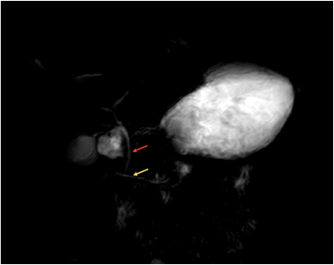
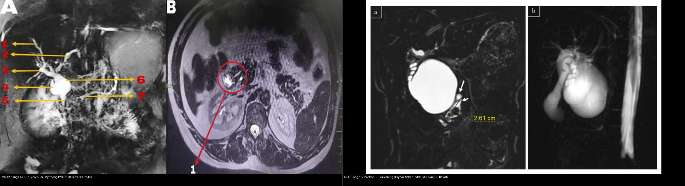
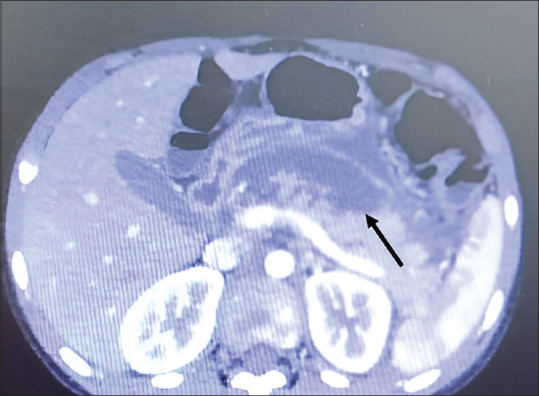
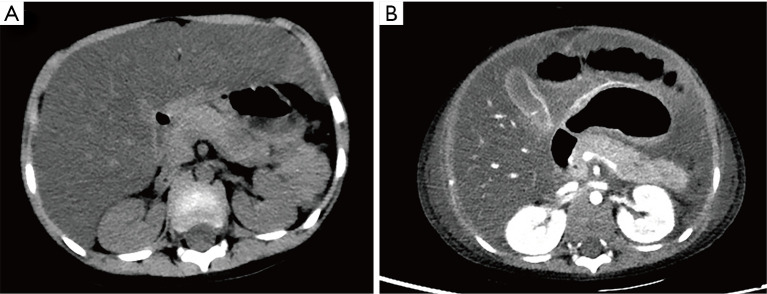
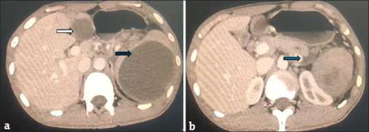
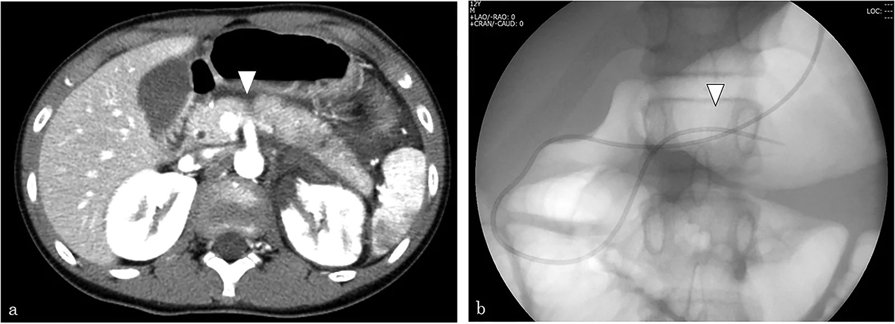

626 — Viêm tụy cấp ở trẻ: nguyên nhân, Atlanta nhi (APFC/ANC → nang giả/WON) & MRCP tìm dị dạng ống tụy / Pediatric acute pancreatitis
Tags: pattern:viem-tuy pattern:nang-gia-tuy vung:tuy score:Atlanta protocol:MRCP protocol:sieu-am-bung
Mức chắc chắn (certainty): tổng hợp y văn (literature synthesis) — nhóm tự biên từ y văn mở (Children 2026, Cureus 2026, JIAPS 2026, Eur J Trauma Emerg Surg 2026) có số; các ca trong quiz là ca nguyên văn (verbatim case) chép đúng tuổi – bối cảnh – chú thích gốc (Poonia/Ann Indian Acad Neurol, Thapa/Ann Med Surg, Zhang/Transl Pediatr, Soni/JIAPS, Kouchi/Eur J Trauma Emerg Surg).
1. Tổng quan bệnh học – cơ chế hình ảnh
Viêm tụy cấp (acute pancreatitis, AP) ở trẻ là bệnh ngày càng được nhận diện, với ~40% trẻ có tụ dịch quanh tụy (pancreatic fluid collection, PFC) và ~60% tái phát trong các nhóm theo dõi dài. Ba câu hỏi của mọi trẻ nghi AP: (1) có đủ tiêu chuẩn chẩn đoán không? (2) còn hoại tử/đang tiến triển không? (3) có nguyên nhân giải phẫu hay di truyền để xử lý gốc không?
- Tiêu chuẩn chẩn đoán INSPPIRE 2012 (nhi): cần 2 trong 3 — (1) đau bụng kiểu tụy; (2) amylase và/hoặc lipase > 3 lần giới hạn trên (ULN); (3) hình ảnh (siêu âm/CT/MRI) phù hợp. TẠI SAO dùng lipase: lipase đặc hiệu tụy hơn amylase, đỉnh muộn hơn và còn cao tới ~8 ngày (amylase về bình thường sau 3–5 ngày), nên bình thường amylase/lipase KHÔNG loại trừ nếu đến muộn hoặc tăng triglyceride máu.
- TẠI SAO hình ảnh phản ánh mức độ: viêm tụy nhẹ là phù kẽ (interstitial edematous) — tụy to lan tỏa, mỡ quanh tụy thâm nhiễm, ngấm thuốc đồng nhất. Hoại tử xuất hiện do huyết khối vi mạch + thiếu máu cục bộ nhu mô → vùng KHÔNG ngấm thuốc trên CT cản quang, không hồi phục ở thì muộn. Hoại tử > 30% nhu mô (hoặc mô tả > 50% trong nhiều ca nhi) = viêm tụy hoại tử; hoại tử càng nhiều thì nguy cơ nhiễm khuẩn, WON, suy tạng càng cao.
- TẠI SAO CT sớm bỏ sót hoại tử: trong 48–72 giờ đầu vùng hoại tử chưa phân định rõ; CT cản quang đánh giá hoại tử tốt nhất sau 72 giờ (lý tưởng 72–96 giờ). Vì vậy CT sớm bình thường không loại trừ; còn ở trẻ ưu tiên siêu âm đầu tay và MRI/MRCP (không tia).
- Tiến triển theo thời gian (phân loại Atlanta sửa đổi 2012) — áp cho nhi: trước 4 tuần → APFC (tụ dịch cạnh tụy cấp, không hoại tử) hoặc ANC (tụ hoại tử cấp, có mảnh hoại tử); sau 4 tuần → nang giả tụy (pseudocyst) (không mảnh hoại tử, vỏ mỏng) hoặc hoại tử khu trú có vỏ (WON, walled-off necrosis) (còn mảnh hoại tử đặc bên trong). Số nhi: PFC gặp ~40% trẻ AP, trong đó APFC 70%; 53% APFC → nang giả, 54% ANC → WON; đường kính > 6 cm dự báo tiến triển nang giả và cần can thiệp.
- Nguyên nhân (thay đổi theo tuổi): vô căn ~70,5% ở nhóm cohort hỗn hợp (Cureus 2026); sỏi mật ~11% tập trung ở trẻ 11–18 tuổi; ở nhóm viêm tụy tái phát, nguyên nhân di truyền chiếm ~37% (Children 2026); ngoài ra: dị dạng ống tụy (tụy divisum, nang ống mật chủ, tụy vòng), chấn thương, thuốc (L-asparaginase, valproate), nhiễm trùng, tăng triglyceride/tăng calci máu.
2. Mẫu hình + chẩn đoán phân biệt theo cơ chế – vị trí (Gamut)
Gamut theo cơ chế nguyên nhân (định hướng xử trí gốc):
- Tắc dòng mật (gallstone, sỏi ống mật chủ): trẻ lớn; siêu âm thấy sỏi/túi mật căng; AP do sỏi có thể cần ERCP lấy sỏi nếu tắc + viêm đường mật.
- Dị dạng ống tụy (ductal anomaly): tụy divisum (ống tụy lưng dẫn lưu qua nhú nhỏ → tăng áp ống lưng gây viêm tái phát); nang ống mật chủ (hợp lưu tụy-mật bất thường → viêm tụy + nguy cơ ung thư đường mật). MRCP (± secretin) là lựa chọn để thấy giải phẫu ống.
- Chấn thương (handlebar/tai nạn): đụng dập/đứt ống tụy → biểu hiện muộn với nang giả (xem bài 623).
- Thuốc – độc chất: L-asparaginase (điều trị ALL), valproate, corticosteroid; chẩn đoán loại trừ nhưng phải nghĩ khi có yếu tố phơi nhiễm.
- Di truyền: PRSS1 (trội, viêm tụy di truyền), CFTR/SPINK1/CTRC (đa gen) — nghĩ khi tái phát không rõ nguyên nhân, tiền sử gia đình.
- Chuyển hóa – nội tiết: tăng triglyceride máu nặng, tăng calci máu, đái tháo đường nhiễm toan ceton.
Gamut theo mẫu hình hình ảnh (cùng tụy, khác mức độ):
- Phù kẽ (interstitial edematous): tụy to lan tỏa + thâm nhiễm mỡ quanh tụy + ngấm đồng nhất.
- Hoại tử (necrotizing): vùng không ngấm ở mọi thì, có thể kèm khí nếu nhiễm khuẩn (khí trong nhu mô/tụ dịch).
- Biến chứng mạch: giả phình (pseudoaneurysm) mạch lách/tá tụy — ổ thuốc giữ hình, giảm đậm độ theo dòng máu; có thể vỡ gây xuất huyết tiêu hóa.
- Biến chứng lân cận: huyết khối tĩnh mạch lách/cửa, tắc mật, hẹp/tắc tá tràng, hội chứng chèn ép ổ bụng (ACS).

MRCP: (A) ống mật chủ đổ vào nhú lớn (mũi tên đỏ); (B) ống tụy lưng đổ riêng qua nhú nhỏ (mũi tên vàng) = tụy divisum. Nguồn: Thapa O et al., Ann Med Surg 2022 (PMC9577615), Fig. 1, CC BY-NC-ND 4.0 (giữ nguyên bản).3. Bảng so sánh phân biệt (ma trận đối chiếu)
| Thực thể (entity) | Hình ảnh điển hình | Chốt vào (rule-in) | Chốt loại (rule-out) | Gợi ý xác nhận |
|---|---|---|---|---|
| Viêm tụy phù kẽ (APFC) | Tụy to lan tỏa, thâm nhiễm mỡ quanh tụy, ngấm thuốc đồng nhất | Lipase > 3× ULN + phù lan tỏa + không ổ không ngấm | Có ổ không ngấm mọi thì → hoại tử | Siêu âm đầu tay; theo dõi, không CT thường quy |
| Viêm tụy hoại tử (ANC/WON) | Vùng không ngấm thuốc (> 30–50% nhu mô); sau 4 tuần còn mảnh hoại tử = WON | Ổ không ngấm mọi thì + thâm nhiễm quanh tụy | Ngấm lại thì muộn → đụng dập; tụy bình thường → loại | CT cản quang sau 72–96 giờ; MRI nếu cần |
| Nang giả tụy (pseudocyst) | Tụ dịch > 4 tuần, vỏ mỏng, dịch đồng nhất, KHÔNG mảnh hoại tử, quanh tụy/ổ bụng | > 4 tuần + dịch đồng nhất + vỏ rõ | Có mảnh hoại tử/khí → WON; có vách/nốt → nghĩ u nang (IPMN/MCN) | Siêu âm/CT/MRI; dẫn lưu khi triệu chứng hoặc > 6 cm |
| Tụy divisum | MRCP: ống tụy lưng đổ qua nhú nhỏ, ống bụng ngắn | Hai hệ ống không hợp nhất + viêm tụy tái phát | Ống hợp nhất bình thường → không phải divisum | MRCP ± secretin; ERCP can thiệp nhú nhỏ |
| Nang ống mật chủ | Nang đường mật + giãn đường mật trong/ngoài gan; MRCP thấy nang | Nang + hợp lưu tụy-mật bất thường + viêm tụy | Chỉ hẹp ống tụy → nghĩ divisum | MRCP; cắt nang + nối mật-ruột (tránh ung thư) |
| Chấn thương tụy | CT: rách/dập, dịch khoang cạnh thận trước, khe dịch đứt ống | Khe dịch đứt ngang ~10 mm / đường rách > 50% trục ngắn | Không tổn thương ống → AAST I–II bảo tồn | MRCP + secretin; ERCP đặt stent (xem bài 623) |

Trái: MRCP — nang ống mật chủ type 1 kèm tụy divisum. Phải: MRCP 3D — ống mật chủ và ống tụy hợp lưu cách xa tá tràng (hợp lưu tụy-mật bất thường). Nguồn: Myrthong AL et al., Cureus 2024 (PMC11299473), CC BY 4.0 + Kaynak Şahap S & Fitoz S, Turk J Med Sci 2026 (PMC13398544), CC BY 4.0. Ảnh ghép letterbox, giữ tỉ lệ.4. Protocol chụp + hệ phân độ/điểm chuẩn hóa
- Siêu âm bụng = đầu tay (ALARA, không tia): xác nhận tụy to, dịch quanh tụy, sỏi mật, thay đổi nang giả theo thời gian; cũng để tìm nguyên nhân (giãn đường mật, nang).
- CT bụng cản quang: chỉ khi không cải thiện/lâm sàng xấu hoặc nghi biến chứng; thời điểm sau 72–96 giờ để tránh bỏ sót hoại tử; nếu đã nhiễm khuẩn/nhiễm độc, CT muộn tìm khí trong nhu mô/WON.
- MRI + MRCP (± secretin): khi nghi dị dạng ống tụy, viêm tụy tái phát không rõ nguyên nhân, hoặc biến chứng muộn; ở trẻ là lựa chọn không tia thay cho CT theo dõi.
- EUS-FNA/ERCP: chọn lọc — đặt stent ống tụy/dẫn lưu nang giả qua nhú nhỏ, lấy mồ (nhú nhỏ) khi divisum có triệu chứng; ERCP chỉ khi cần can thiệp (hạn chế viêm tụy sau ERCP).
- Phân độ — dùng NASPGHAN 2017 cho trẻ (nhẹ: không suy tạng, không biến chứng; trung bình/nặng: có biến chứng/suy tạng) và phân loại hình ảnh Atlanta sửa đổi 2012: APFC/ANC < 4 tuần**, **pseudocyst/WON > 4 tuần.
- Theo dõi biến chứng: tụ dịch > 6 cm → nguy cơ cao tiến triển/cần can thiệp; nang giả có triệu chứng (đau, chèn ép, nhiễm khuẩn) → dẫn lưu qua da/ERCP (qua da an toàn ở nhi); WON nhiễm khuẩn → dẫn lưu + nội soi/necrosectomy nếu cần.
- Suy tạng/ACS: theo dõi áp lực bàng quang, hô hấp, thận (tăng creatinine), tuần hoàn — suy tạng kéo dài > 48 giờ = nặng.
flowchart TD
A["Tre dau bung + amylase/lipase > 3x ULN"] --> B{"Du 2/3 tieu chuan INSPPIRE?"}
B -->|Khong| Z["Khong phai viem tuy cap - tim nguyen nhan khac"]
B -->|Co| C["Sieu am bung dau tay (ALARA)"]
C --> D{"Nang / khong cai thien / xau di?"}
D -->|Khong| E["Dieu tri noi khoa + theo doi"]
D -->|Co| F["CT can quang sau 72-96 gio (hoac MRI neu tre nho)"]
F --> G{"O KHONG ngam moi thi > 30-50%?"}
G -->|Khong| H["Phu ke (APFC): bao ton"]
G -->|Co| I["Viem tuy hoai tu (ANC)"]
I --> J{"Sau 4 tuan con cu?"}
H --> J
J -->|Khong cu| K["APFC / ANC < 4 tuan"]
J -->|Co cu + dich dong nhat| L["Nang gia (pseudocyst)"]
J -->|Co cu + manh hoai tu| M["WON (walled-off necrosis)"]
L --> N{"Trieu chung / > 6 cm?"}
M --> N
N -->|Khong| O["Theo doi"]
N -->|Co| P["Dan luu qua da / ERCP / noi soi"]
C --> Q{"Nguyen nhan?"}
Q -->|"Tai phat / khong ro"| R["MRCP +/- secretin: tuy divisum, nang OMC, sot soi"]
Q -->|Sot soi + viem duong mat| S["ERCP lay soi"]
Q -->|"Chan thuong"| T["MRCP: dut ong tuy -> ERCP stent (bai 623)"]
5. Biến thể bình thường và cạm bẫy
- CT sớm (< 72 giờ) bình thường không loại trừ hoại tử — đừng kết luận "nhẹ" rồi bỏ theo dõi; đặc biệt khi trẻ xấu đi.
- Lipase/amylase bình thường gặp khi đến muộn (> 5–8 ngày), tăng triglyceride máu, hoặc bệnh cảnh mạn; bình thường không loại trừ.
- Nang giả vs WON: chỉ WON có mảnh hoại tử đặc bên trong; nhầm WON thành nang giả → dẫn lưu không đúng, nguy cơ nhiễm khuẩn/chảy máu.
- Nang giả tụy vs u nang tụy (IPMN/MCN/SCN): nang giả luôn có bối cảnh viêm tụy trước; nang có vách/nốt đặc không tiêu biến sau 6 tuần → nghĩ u nang (bài 136).
- Tụy divisum là biến thể giải phẫu khá phổ biến — chỉ có ý nghĩa bệnh lý khi kèm viêm tụy tái phát/dãn ống, không "chốt" nguyên nhân một mình.
- Giả phình mạch dễ bị bỏ qua; tìm khi có xuất huyết tiêu hóa/giảm Hct đột ngột ở trẻ viêm tụy — ổ thuốc giữ hình, giảm theo dòng máu trên CT động mạch.
- Đau bụng dữ + trướng + tăng áp lực bàng quang → nghĩ ACS, cần đo áp lực bàng quang (không chỉ dựa trên hình ảnh).
6. Tự lượng giá — Blind Quiz (ảnh trơn ngoài, đáp án ẩn trong khối chi tiết)
Ca 1 — Bé gái có u sán não đang dùng valproate, đau bụng dữ. CECT bụng. Mô tả tụy trước khi mở đáp án.

- Gợi ý lâm sàng: trẻ dùng valproate, đau bụng cấp; nghi biến chứng do thuốc.
- Câu hỏi: Dấu hiệu chính trên tụy? Tỷ lệ diện tích không ngấm là bao nhiêu và nghĩa là gì? Ba chẩn đoán phân biệt?
Bấm để hiện đáp án (findings + chẩn đoán)
- Dấu hiệu: CECT bụng lát ngang — vùng KHÔNG ngấm thuốc chiếm > 50% nhu mô tụy (mũi tên đen), kèm thâm nhiễm mỡ quanh tụy = viêm tụy hoại tử cấp.
- Chẩn đoán: viêm tụy hoại tử do valproate (biến chứng nặng ở trẻ dùng valproate) — hoại tử > 30–50% nhu mô làm tăng nguy cơ WON/nhiễm khuẩn/suy tạng.
- Phân biệt: viêm tụy phù kẽ (ngấm đồng nhất), đụng dập tụy sau chấn thương (ngấm lại thì muộn), hoại tử do tăng triglyceride/sốc.
- Nguồn ảnh: Poonia H et al., Ann Indian Acad Neurol 2026 (PMC13349259), Fig. 1, CC BY-NC-ND 4.0 (giữ nguyên bản).
Ca 2 — Bé gái 13 tuổi viêm tụy tái phát nhiều đợt. MRCP bụng. Tìm nguyên nhân gốc.
- Gợi ý lâm sàng: viêm tụy tái phát, đã loại trừ nguyên nhân thường gặp.
- Câu hỏi: Hai ống nào đổ riêng? Dấu hiệu gì chỉ tụy divisum? Vì sao gây viêm tái phát?
Bấm để hiện đáp án (findings + chẩn đoán)
- Dấu hiệu: (A) ống mật chủ đổ vào nhú lớn (mũi tên đỏ); (B) ống tụy lưng dẫn lưu riêng qua nhú nhỏ (mũi tên vàng) = tụy divisum (không hợp nhất hệ ống lưng – bụng).
- Chẩn đoán: viêm tụy tái phát do tụy divisum — ống lưng dẫn lưu qua nhú nhỏ hẹp → tăng áp lực ống lưng → tái phát. MRCP ± secretin là lựa chọn; xử trí mồ/nong nhú nhỏ hoặc ERCP đặt stent khi có triệu chứng, cân nhắc cắt đầu tụy bảo tồn tá tràng khi xơ hóa.
- Nguồn ảnh: Thapa O et al., Ann Med Surg 2022 (PMC9577615), Fig. 1, CC BY-NC-ND 4.0 (giữ nguyên bản).
Ca 3 — Bé trai đang điều trị ALL (L-asparaginase), đau bụng. Hai thì CT cách nhau vài ngày + MRI. Diễn tiến?

- Gợi ý lâm sàng: đau bụng trong đợt hóa trị ALL.
- Câu hỏi: So sánh 2 panel A/B; dấu hiệu nào cho thấy tiến triển hoại tử? Biến chứng muộn là gì?
Bấm để hiện đáp án (findings + chẩn đoán)
- Dấu hiệu: (A) CT không cản quang ban đầu — vùng giảm đậm độ nhẹ ở đuôi tụy, chưa phồng khu trú; (B) CECT sau đó — tổn thương tiến triển rõ hơn (viêm tụy do asparaginase). MRI sau đó (Fig. 3 gốc) cho thấy hóa lỏng/hoại tử mô sau phúc mạc trái + nhiễm khuẩn + nang giả nhỏ ở thân tụy.
- Chẩn đoán: viêm tụy hoại tử do L-asparaginase — CT sớm có thể chỉ giảm đậm độ nhẹ → không loại trừ; biến chứng gồm nang giả, nhiễm khuẩn, hội chứng chèn ép ổ bụng (ACS).
- Nguồn ảnh: Zhang H & Lu W, Transl Pediatr 2025 (PMC12163796), Fig. 1, CC BY-NC-ND 4.0 (giữ nguyên bản).
Ca 4 — Bé trai 13 tuổi đau bụng tái diễn, nhiều tụ dịch trong ổ bụng. CT bụng. Gọi tên các tụ dịch và vị trí.

- Gợi ý lâm sàng: viêm tụy trước đó, đau bụng tái diễn; dịch được phân tích.
- Câu hỏi: Vị trí các tụ dịch? Vì sao gọi là "nang giả"? Điều kiện để gọi nang giả theo Atlanta?
Bấm để hiện đáp án (findings + chẩn đoán)
- Dấu hiệu: (a) CT ban đầu — nang 8 × 8 × 11 cm ở lách (mũi tên đen) + nang 3 × 3 × 5 cm ở ngách gan–dạ dày (mũi tên trắng); CT cản quang cho thấy lan quanh tụy/ổ bụng phải.
- Chẩn đoán: nang giả tụy lan tới cả gan và lách (rất hiếm ở trẻ). Chỉ gọi pseudocyst khi tụ dịch tồn tại > 4 tuần, có vỏ rõ, dịch đồng nhất, KHÔNG mảnh hoại tử (ngược lại là WON).
- Nguồn ảnh: Soni ES et al., J Indian Assoc Pediatr Surg 2026 (PMC13061460), Fig. 1, CC BY-NC-SA 4.0 (giữ nguyên bản).
Ca 5 — Bé trai chấn thương bụng kín. CECT lúc nhập viện + diễn tiến sau đó. Đọc tổn thương tụy và biến chứng.

- Gợi ý lâm sàng: chấn thương bụng kín (cơ chế tay lái/tai nạn).
- Câu hỏi: Dấu hiệu ở thân tụy? Biến chứng nào xuất hiện muộn? Vì sao cần đánh giá ống tụy?
Bấm để hiện đáp án (findings + chẩn đoán)
- Dấu hiệu: CECT nhập viện — vùng giảm đậm độ ở thân tụy (đầu mũi tên) kèm tụ dịch quanh tụy lan rộng = đụng dập tụy (grade IIIA theo AAST 2024).
- Diễn tiến: các ca grade IIIB xuất hiện nang giả muộn (đau bụng tăng vào ngày 17) → nhiễm khuẩn nang giả → dẫn lưu xuyên nhú (TPPD) qua ERCP; một số được đặt stent ống tụy để bảo tồn, giảm teo tụy.
- Vì sao đánh giá ống: tổn thương ống tụy quyết định nguy cơ nang giả/teo tụy và lựa chọn ERCP stent (xem bài 623).
- Nguồn ảnh: Kouchi K et al., Eur J Trauma Emerg Surg 2026 (PMC13553718), Fig. 2, CC BY-NC-ND 4.0 (giữ nguyên bản).
Ca 6 — MRCP ở trẻ viêm tụy tái phát: ghép mỗi panel với dị dạng giải phẫu (tụy divisum vs hợp lưu tụy-mật bất thường).
- Câu hỏi: Panel trái và phải mô tả gì? Dị dạng nào nguy cơ ung thư đường mật? Hướng xử trí từng loại?
Bấm để hiện đáp án (findings + chẩn đoán)
- Trái: nang ống mật chủ type 1 + tụy divisum → xử trí cắt nang + nối mật-ruột (Roux-en-Y), theo dõi lâu dài vì nguy cơ ung thư đường mật.
- Phải: ống mật chủ và ống tụy hợp lưu cách xa tá tràng = hợp lưu tụy-mật bất thường (liên quan nang ống mật chủ và viêm tụy tái phát) → tìm và xử lý dị dạng gốc; MRCP 3D thấy rõ hơn ảnh slab dày.
- Nguồn ảnh: Myrthong AL et al., Cureus 2024 (PMC11299473), CC BY 4.0 + Kaynak Şahap S & Fitoz S, Turk J Med Sci 2026 (PMC13398544), CC BY 4.0 (ảnh ghép letterbox).
Bài liên quan chéo
- 600 – Tổng quan Hệ Nhi khoa
- 620 – Cấp cứu tiêu hóa sơ sinh & nhũ nhi
- 623 – Chấn thương tụy–tá tràng ở trẻ (AAST tụy I–V, đứt ống tụy)
- 625 – Vàng da tắc mật sơ sinh (teo đường mật, nang ống mật chủ)
- 135 – Viêm tụy cấp (Atlanta)
- 136 – U đặc & nang tụy (PDAC, pNET, IPMN/MCN/SCN)
- 665 – Khối u gan ở trẻ em
Ảnh
- Tên file:
NNN_slug_Modality_SourceID.jpg. Nguồn + giấy phép từng ảnh:images/CREDITS.mdvàsources.md. - Ảnh CC BY 4.0 dùng cho ảnh ghép; ảnh CC BY-NC-ND giữ nguyên bản, không crop/ghép; ảnh CC BY-NC-SA giữ nguyên bản.
Không dùng để chẩn đoán độc lập khi chưa có người hướng dẫn.